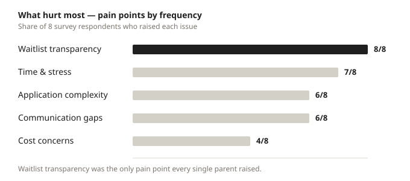

Ontario Daycare Access
It should feel like package tracking for parents — but right now they’re waiting on a package with no tracking number and no delivery date.
Affordability was fixed. Access broke.
The $10/day CWELCC program solved the cost of childcare in Ontario — but it created zero new spots. More parents entered the search against a system that was never designed to handle the demand that affordability creates.
The result is a black box. Parents apply to 10–20 centers one at a time, then wait months to over a year with no waitlist position, no timeline, and no proactive contact — just “we’ll call you.” Meanwhile providers drown in phone calls, emails, and manual spreadsheets.
The system must serve two sides at once. Any tool that solves only one side fails — exactly like everything currently on the market.
How I investigated
I started by defining the objective and mapping what we already knew against what we still needed to learn, then built research questions around the waitlist, enrollment, and the $10/day policy. Primary research combined a survey with semi-structured interviews, recruiting a deliberate mix: first-time and experienced parents, parents currently on waitlists, subsidy-eligible and newcomer families, plus daycare providers to capture both sides of the service.
Four parents, four ways into the same broken system
From the research I built four personas that map the spectrum of need — from a newcomer still waiting after 1.5 years to a planner doing it all over again for a second child.

Personas grounded in the parent interviews — Uma, Natalie, Priya, and Lena.
The waitlist black box is the #1 pain
Across the survey, waitlist transparency was the single pain point every respondent raised. Parents don’t know their position, whether their application was even received, or how long to wait.

Pain points ranked by how many survey respondents raised each.
Zero waitlist transparency
No position, no movement, no timeline — the source of maximum stress.
Fragmented applications
Parents contact 10–20 centers individually. No centralized system exists.
No real-time availability
Parents waste time applying to centers that are already full.
Reactive communication
Phone tag and unreturned emails. Parents must initiate every follow-up.

Affinity map clustering insights from the parent interviews.
Five stages, one critical failure point
Mapping the end-to-end journey shows where it breaks: the waitlist. Stress peaks exactly where the system goes silent.
A simplified view of the journey — the waitlist is the critical failure point.

The full customer journey with parent quotes, emotions, and opportunities.
What happens behind the scenes
The service blueprint exposes the manual, invisible work on the provider side — paper waitlists, no system, no proactive contact — that produces the parent’s black-box experience.

Current-state service blueprint — frontstage, backstage, and failure points.
Three layers of tools, one unfilled gap
Every existing tool covers only part of the journey. Discovery tools help you search but not act. Provider tools manage children already enrolled. Government portals list providers but aren’t built around the parent’s decision. None bridges discovery to enrollment.
The three-layer gap: no Ontario tool bridges the full journey.
Quebec’s mandated portal as a benchmark — and where Ontario could improve on it.
A service that serves both sides
The opportunity is a shared service layer: search by real availability, one application across many centers, a visible waitlist position, proactive notifications, and provider tools light enough that staff will actually keep them updated. The provider-side flow — receive inquiry, add to waitlist, manage, offer spot — is designed to replace the spreadsheet without adding work.

Provider-side flow: receive inquiry → add to waitlist → manage → offer spot.
What I’d validate next
Senior service design means naming what you don’t yet know. Do parents actually want their exact position — one respondent said more information increased her stress? How much time will providers spend updating a system before they abandon it? Who owns and maintains the platform — government, nonprofit, or private — and do parents trust it with their data after Quebec’s 2021 breach? And what happens when a parent declines a spot — do they lose their place? These are the questions the next research round needs to answer.